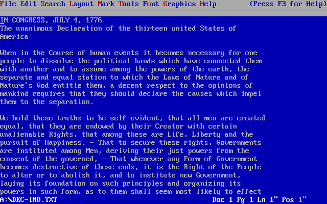

Thoughts on Editorially closing, why I don't use web-based editors (yet) and why speed is the killer feature

The first document I can clearly remember typing into a computer was a fake constitution for a fake country I made up in 5th grade. It was awesome, and I typed it out on WordPerfect for DOS—a platform so hideously ugly that you never worried about what the documents looked like. You just wrote and wrote, and when you were done, you saved the file and printed.
That was it. Open program, write document, save it, print it. Done.
Fast-forward two decades and text editing is starting to come full circle. While I wouldn’t call it commonly accepted yet, tons of writers are dropping their bloated word processors and switching to minimalist, Markdown-compatible apps. And they’re doing it because speed is key.
As a web writer, my best process is to get my ideas down as fast as I humanly can, then edit them down once I’m done. With Microsoft Word and Apple Pages, there are so many style options and formatting quirks that writing becomes a pain, but with an app like Mou, there’s nothing to hold me up. My new process is much like my old one:
Click the Mou icon, write document, save to Dropbox, publish it.
My process is really fast, but the writers of the world wouldn’t be trying hard if we weren’t always looking for something better. Enter Editorially:
Our goal is to support and encourage that writing process — from the first flash of inspiration all the way through to publication, and at every point in between.
Editorially achieves this goal in many ways: a Markdown-based writing environment lets you focus on the words and create clean markup easily; collaboration tools let you invite friends and trusted colleagues to review or edit your work; a document version system lets you mark points in a document’s history and compare versions to see what changed; notes and activity feeds encourage you to reflect on your work, for yourself and for others; and discussion threads recognize that the conversation around a text is just as important as the text itself.
I’ll be the first to tell you that Editorially does a lot of cool things—especially nice is the fact that as a web app, it works beautifully every platform and every screen size—but it has one major flaw. To write a document, here’s the process:
Open browser, go to editorially.com, sign in, click “New document”, name the document, write document, save to Dropbox, publish it.
Many of these tasks are practically reflexes at this point, but it’s still eight steps against four. And it gets even worse when you look at opening a file. With Mou, I can just click on a file in a folder and it opens. With Editorially, I have to enter the walled garden. Again, nothing too dramatic, but every little bit matters.
It kind of reminds me of an old Google bit:
After a bit of looking, Marissa explained that they found an uncontrolled variable. The page with 10 results took .4 seconds to generate. The page with 30 results took .9 seconds.
Half a second delay caused a 20% drop in traffic. Half a second delay killed user satisfaction.
I definitely saw this in my own personal experience. I was a big advocate of Editorially from the start, but I could never really explain why I didn’t use it regularly. Even with a host of great features, the writing process was never a joy. As a user, I was never truly satisfied.
And perhaps I wasn’t the only one. From Editorially:
Today brings some sad news: Editorially is closing its doors.
We’re proud of the team and tool that we built together and incredibly thankful that so many of you were willing to give it a try. And we continue to believe that evolving the way we collaborate as writers and editors is important work. But Editorially has failed to attract enough users to be sustainable, and we cannot honestly say we have reason to expect that to change.
So what are my takeaways from this?
- Writing is the primary focus for writers. Anything that adds time between the ideas and the typing is a negative.
- For a web-based text editor to really take off, it probably will need to get creative with how it can access files (see: Google Drive).
- Editorially’s online collaborative document management system is a great idea, and the platform might’ve succeeded if there was a corresponding document-creation app.
- Speed is, and will always be, the “killer feature.”
 — Chris Hall
— Chris Hall
@hashtaghall
February 21, 2014